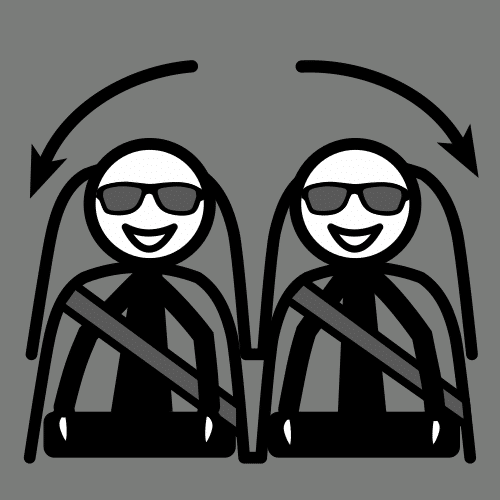

Diccionario LF
Actuar
Definición: Comportarse de una manera determinada.
Ejemplo: Si me llaman para una entrevista de trabajo sabré cómo actuar.
Adaptar
Definición:
Modificar o ajustar algo para que sirva en una situación nueva.
Ejemplo:
Voy a adaptarme a mi nuevo trabajo
Adecuada/Adecuado
 Definición: Algo que es apropiado, acertado o idóneo para alguien o algo.
Definición: Algo que es apropiado, acertado o idóneo para alguien o algo.
Ejemplo: Este traje es adecuado para la fiesta de disfraces.
Aspirante

Definición:
Que aspira a conseguir un empleo, distinción o título.
Ejemplo:
Es aspirante a conseguir el puesto de secretaría.
Biografía
 Definición: Narración de la vida de una persona.
Definición: Narración de la vida de una persona.
Ejemplo: Mi abuela ha escrito su biografía.
Características
 Definición: Cualidad o rasgo que describe a una persona o a algo.
Definición: Cualidad o rasgo que describe a una persona o a algo.
Ejemplo: Una característica tuya son tus ojos azules.
Carnet

Definición: Tarjeta de identificación importante con nuestros datos personales.
Ejemplo: La policía me pidió que le enseñara mi carnet.
Categorías gramaticales
 Definición: Se refiere a la clasificación de las palabras de un idioma según su función, significado o contenido.
Definición: Se refiere a la clasificación de las palabras de un idioma según su función, significado o contenido.
Ejemplo: Los sustantivos y los adjetivos forman parte de las categorías gramaticales.
Conquistar
Definición:
Obtener algo con esfuerzo y trabajo.
Ejemplo:
He conquistado tu corazón.
Consejo
 Definición: Es la opinión que se da o se recibe para hacer o no hacer algo.
Definición: Es la opinión que se da o se recibe para hacer o no hacer algo.
Ejemplo:Persona de pie ofreciéndole un consejo a otra que está delante suya prestando atención.
Currículum vitae

Definición: Documento con tus datos personales en el que también se recoge información sobre tus estudios y experiencia.
Ejemplo: He presentado un buen currículum vitae y he conseguido el trabajo.
Decidir
 Definición: Realizar una elección sobre algo.
Definición: Realizar una elección sobre algo.
Ejemplo: Tuvimos que decidir rápidamente sobre lo que queríamos comer.
Departamento
.png) Definición: Parte en que está dividida una organización o empresa.
Definición: Parte en que está dividida una organización o empresa.
Ejemplo: Este es el departamento de becas de la universidad.
Digital
 Definición: Realizado con ordenador o tecnología.
Definición: Realizado con ordenador o tecnología.
Ejemplo: Mi profesora siempre pide los trabajos en formato digital.
Diseñar
 Definición: Hacer un plan detallado para llevar a cabo una acción o idea.
Definición: Hacer un plan detallado para llevar a cabo una acción o idea.
Ejemplo: Ya he diseñado cómo será mi currículum vitae.
Empleo
 Definición: Trabajo que se realiza a cambio de un salario.
Definición: Trabajo que se realiza a cambio de un salario.
Ejemplo: Me han ofrecido empleo como taxista.
Empresa
 Definición: Organización de personas y recursos que buscan conseguir un beneficio económico con el desarrollo de una actividad.
Definición: Organización de personas y recursos que buscan conseguir un beneficio económico con el desarrollo de una actividad.
Ejemplo: En la empresa de mi madre hay muchos trabajadores.
Entrevista laboral

Definición: Es una conversación que se da con el objetivo de evaluar la experiencia, la capacidad y formación que una persona tiene para desempeñar un puesto de trabajo.
Ejemplo: Mañana tengo una entrevista laboral para trabajar en una frutería.
Éxito

Definición:
Es el resultado feliz y satisfactorio de un asunto.
Ejemplo:
Mi libro ha tenido mucho éxito entre los lectores.
Experiencia
Definición: Conocimiento de algo, o habilidad para ello, que se adquiere al haberlo realizado, vivido, sentido o sufrido una o más veces.
Ejemplo: Tengo 4 años de experiencia como cocinero.
Explorado
.png "Explorado")
Definición:
Tratar de descubrir lo que hay en una cosa o lugar.
Ejemplo:
Este lugar no está explorado todavía.
Exposición
Definición: Explicación de un tema de forma oral.
Ejemplo: Javier ha realizado una exposición estupenda.
Experiencia
Definición: Comportarse de una manera determinada.
Ejemplo: Si me llaman para una entrevista de trabajo sabré cómo actuar.
Famoso
Definición: Que tiene fama o es muy conocido entre la gente.
Ejemplo: A la fiesta asistieron muchos famosos.
Formación
.png) Definición: Estudio, aprendizaje, instrucción, enseñanza que posee una persona.
Definición: Estudio, aprendizaje, instrucción, enseñanza que posee una persona.
Ejemplo: Para ser policía debes tener una formación adecuada.
Habilidades

Definición:
Es la capacidad o aptitud para realizar una actividad.
Ejemplo:
Tengo mucha habilidad para patinar.
Idiomas
.png) Definición: Sistema de signos que utiliza una comunidad para comunicarse oralmente o por escrito.
Definición: Sistema de signos que utiliza una comunidad para comunicarse oralmente o por escrito.
Ejemplo: Estudio inglés en la escuela de idiomas.
Imagen Personal
 Definición: Es la apariencia externa de las personas o las cosas.
Definición: Es la apariencia externa de las personas o las cosas.
Ejemplo: Nuestra imagen personal dice cómo somos.
Lenguaje formal
 Definición: Es el lenguaje que se emplea entre personas que no tienen familiaridad o confianza entre sí.
Definición: Es el lenguaje que se emplea entre personas que no tienen familiaridad o confianza entre sí.
Ejemplo: Para hablar con mi jefe utilizo un lenguaje formal.
Lenguaje informal
 Definición: Es el lenguaje que se emplea entre personas que se conocen o que tienen confianza entre sí.
Definición: Es el lenguaje que se emplea entre personas que se conocen o que tienen confianza entre sí.
Ejemplo: Para hablar con mis amigos utilizo el lenguaje informal.
Listado
 Definición: Serie ordenada en columnas de palabras, nombres o datos.
Definición: Serie ordenada en columnas de palabras, nombres o datos.
Ejemplo: Voy a hacer el listado de alimentos que necesito comprar.
Mural Digital

Definición:
Son espacios de trabajo en el que todos los integrantes hacen su aportación y comparten su conocimiento.
Ejemplo:
Vamos a hacer en ciencias un mural digital sobre los animales marinos.
Ofertas
Definición:Ofrecimiento para hacer o cumplir una cosa.
Ejemplo: Me han hecho una buena oferta de trabajo.
Ofrecer
Definición: Presentar y dar voluntariamente algo.
Ejemplo: Me ofreció su ayuda para arreglar el grifo.
Oral
 Definición: Algo que se expresa de forma hablada.
Definición: Algo que se expresa de forma hablada.
Ejemplo: He tenido un examen oral de inglés.
Portavoz
 Definición: Es la persona que ha sido elegida para representar a un grupo y hablar en su nombre.
Definición: Es la persona que ha sido elegida para representar a un grupo y hablar en su nombre.
Ejemplo: El portavoz tiene 5 minutos para hablar y dar su propuesta
Puesto de trabajo
 Definición:Es el espacio y actividades que una persona desarrolla dentro de una empresa.
Definición:Es el espacio y actividades que una persona desarrolla dentro de una empresa.
Ejemplo: Me han ofrecido un puesto de trabajo en una frutería.
Rechazar
 Definición: Acción de mostrarse en contra de algo que se le ofrece o propone a una persona.
Definición: Acción de mostrarse en contra de algo que se le ofrece o propone a una persona.
Ejemplo: Mi hermano ha rechazado la ayuda para aprender inglés.
Recomendaciones
Definición:
Algo que te animan a realizar porque es bueno, agradable o tiene beneficios positivos.
Ejemplo:
Me están dando recomendaciones para hacer deporte.
Reflexionar
Definición: Pensar despacio sobre un asunto.
Ejemplo: Estoy reflexionando sobre qué quiero hacer respecto a mi futuro laboral.
Resumen

Definición:
Exposición breve, oral o escrita, que sintetiza las ideas principales de un texto.
Ejemplo:
Hice un resumen del texto de ciencias naturales.
Reto
Definición:
Situación difícil o peligrosa a la que alguien se enfrenta.
Ejemplo:
Andar con las manos para mí es un reto.
Revisar
 Definición: Examinar algo con cuidado y atención.
Definición: Examinar algo con cuidado y atención.
Ejemplo: Es importante revisar el trabajo antes de entregarlo.
Rumbo

Definición:
Camino que alguien se propone seguir
Ejemplo:
Cuando nos levantamos, tomamos rumbo hacia la montaña.
Simulador de conducción
Definición:Es un dispositivo que sirve para reproducir las condiciones propias de una actividad.
Ejemplo: Fui a la feria y me monté en una atracción que era un simulador de conducción.
Teoría
.jpg) Definición: Sistema de signos que utiliza una comunidad para comunicarse oralmente o por escrito.
Definición: Sistema de signos que utiliza una comunidad para comunicarse oralmente o por escrito.
Ejemplo: Estudio inglés en la escuela de idiomas.
Trabajo cooperativo
 Definición: Actividad realizada por dos o más personas con un mismo objetivo.
Definición: Actividad realizada por dos o más personas con un mismo objetivo.
Ejemplo: Hemos realizado en clase un trabajo cooperativo.